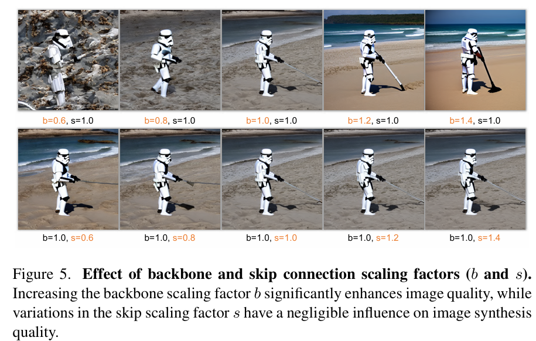
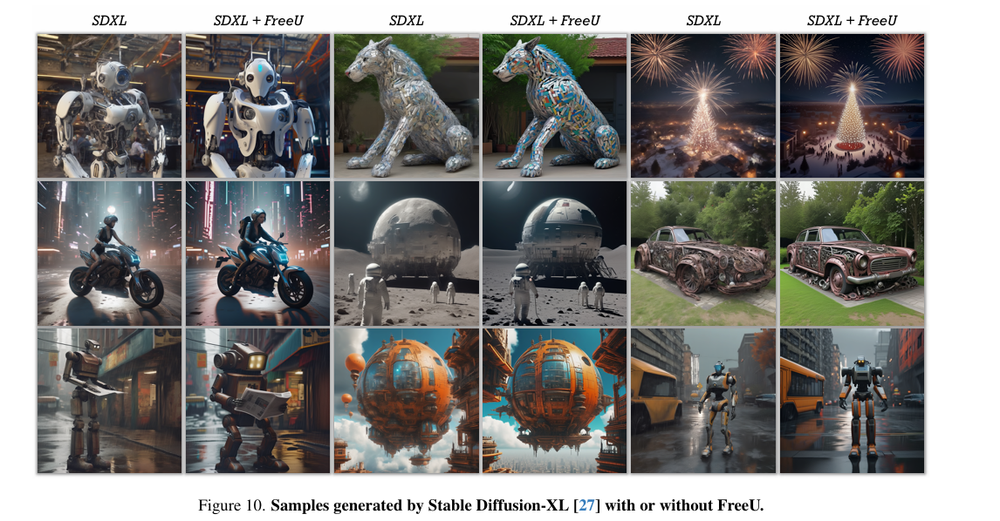

全文翻译
摘要
在本文中，我们揭示了扩散U-Net中未被充分利用的潜力，它可作为一种“免费午餐”，在不增加计算成本的情况下显著提升生成质量。我们首先研究了U-Net架构在去噪过程中的关键贡献，发现其主骨干主要负责去噪，而跳跃连接主要将高频特征引入解码器模块，导致网络忽略了骨干的语义信息。基于这一发现，我们提出了一种简单而有效的方法——称为“FreeU”，它无需额外的训练或微调即可提高生成质量。我们的核心见解是策略性地重新加权来自U-Net跳跃连接和骨干特征图的贡献，以利用U-Net架构两个组件的优势。在图像和视频生成任务上的实验结果表明，我们的FreeU可以轻松集成到现有的扩散模型中，例如Stable Diffusion、DreamBooth、ModelScope、Rerender和ReVersion，只需几行代码即可提高生成质量。你所需要做的就是在推理过程中调整两个缩放因子。项目页面：https://chenyangsi.top/FreeU/
引言
扩散概率模型作为生成模型的一个前沿类别，已成为研究领域的焦点，尤其是在计算机视觉相关任务中 [5,6,8,10,12,20,22,26,28,29,32]。与变分自编码器（VAE）[21]、生成对抗网络（GANs）[3,9,16-19,25] 和向量量化方法 [7,34] 等其他类别的生成模型不同，扩散模型引入了一种新颖的生成范式。这些模型采用固定的马尔可夫链来映射潜在空间，促进捕获数据集中潜在结构复杂性的复杂映射。最近，其令人印象深刻的生成能力（从细节的高水平到生成示例的多样性）推动了各种计算机视觉应用的突破性进展，如图像合成 [12,29,32]、图像编辑 [1,4,14,24]、图像到图像翻译 [4,31,36] 和文本到视频生成 [2,11,13,23,33,37,38,40]。
扩散模型由扩散过程和去噪过程组成。在扩散过程中，高斯噪声逐渐添加到输入数据中，最终将其破坏为近似纯高斯噪声。在去噪过程中，通过学习的逆扩散操作序列从噪声状态恢复原始输入数据。通常，U-Net 被训练用于在每个去噪步骤迭代预测要去除的噪声。现有工作专注于利用预训练的扩散 U-Net 进行下游应用，而扩散 U-Net 的内部特性在很大程度上仍未被探索。
除了扩散模型的应用之外，在本文中，我们对研究扩散 U-Net 在去噪过程中的有效性感兴趣。为了更好地理解去噪过程，我们首先提出了一种向傅里叶域的范式转变，以透视扩散模型的生成过程，这是一个此前研究有限的领域。如图2 所示，最上面一行展示了逐步去噪过程，呈现了连续迭代中生成的图像。接下来的两行展示了逆傅里叶变换后与每个步骤对应的低频和高频空间域信息。
| 图2. 去噪过程。顶行展示了图像在迭代过程中的渐进去噪过程，接下来的两行展示了逆傅里叶变换后与每个步骤匹配的低频和高频分量。显然，低频分量变化缓慢，而高频分量在去噪过程中表现出更显著的变化。 |
从图2 中可以明显看出，低频分量逐渐调制，变化速率较缓，而高频分量在去噪过程中表现出更显著的动态变化。这些发现在图3 中得到了进一步证实。这可以直观地解释为：
- 1）低频分量本质上体现了图像的全局结构和特征，包括全局布局和平滑的颜色。这些分量封装了构成图像本质和表示的基础全局元素。在去噪过程中，其快速变化通常是不合理的。这些分量的剧烈变化可能会从根本上重塑图像的本质，这通常与去噪过程的目标不相容。
- 2）相反，高频分量包含图像中的快速变化，例如边缘和纹理。这些更精细的细节对噪声明显敏感，当噪声引入图像时，通常表现为随机高频信息。因此，去噪过程需要在去除噪声的同时保留不可或缺的复杂细节。
| 图3. 随着骨干缩放因子b的变化，傅里叶相对对数振幅的变化。b的增加相应地导致扩散模型生成的图像中的高频分量受到抑制。 |
鉴于去噪过程中低频和高频分量之间的这些观察结果，我们扩展了研究，以确定扩散框架内 U-Net 架构的具体贡献。在 U-Net 解码器的每个阶段，来自跳跃连接的跳跃特征和骨干特征被连接在一起。我们的研究表明，U-Net 的主骨干主要对去噪做出贡献。相反，观察到跳跃连接将高频特征引入解码器模块。这些连接传播细粒度的语义信息，使其更容易恢复输入数据。然而，这种传播的一个意想不到的后果是，在推理阶段可能会削弱骨干固有的去噪能力。这可能导致生成异常的图像细节，如图1 的第一行所示。
| 图1. 我们提出了FreeU，这是一种无需任何成本即可显著提高扩散模型样本质量的方法：无需训练，无需引入额外参数，也不会增加内存或采样时间。 |
基于这一发现，我们提出了一种新的策略，称为 “FreeU”，它有潜力在不需要额外训练或微调的计算开销的情况下提高样本质量。在推理阶段，我们实例化了两个专门的调制因子，旨在平衡来自 U-Net 架构主骨干和跳跃连接的特征贡献。第一个称为骨干特征因子，旨在放大主骨干的特征图，从而增强去噪过程。然而，我们发现虽然包含骨干特征缩放因子会产生显著的改进，但有时会导致不理想的纹理过度平滑。为了缓解这个问题，我们引入了第二个因子，跳跃特征缩放因子，旨在减轻纹理过度平滑的问题。
我们的 FreeU 框架在与现有扩散模型集成时表现出无缝的适应性，包括文本到图像生成和文本到视频生成等应用。我们对我们的方法进行了全面的实验评估，采用 Stable Diffusion [29]、DreamBooth [30]、ReVersion [15]、ModelScope [23] 和 Rerender [39] 作为我们的基准比较基础模型。通过在推理阶段采用 FreeU，这些模型表明生成输出的质量有明显的提高。图1 中的可视化证实了 FreeU 在显著增强生成图像中的复杂细节和整体视觉保真度方面的有效性。我们的贡献总结如下：
- 我们研究并揭示了扩散模型中 U-Net 架构用于去噪的潜力，并确定其主骨干主要对去噪做出贡献，而其跳跃连接将高频特征引入解码器模块。
- 我们进一步引入了一种简单而有效的方法，称为 “FreeU”，它通过利用 U-Net 架构两个组件的优势来增强 U-Net 的去噪能力。它在不需要额外训练或微调的情况下显著提高了生成质量。
所提出的 FreeU 框架是通用的，可以无缝集成到现有的扩散模型中。我们展示了在各种基于扩散的方法中样本质量的显著提高，表明 FreeU 在没有额外成本的情况下是有效的。
2. 方法
2.1 预备知识
扩散模型（如去噪扩散概率模型DDPM[12]）包含用于数据建模的两个基本过程：扩散过程和去噪过程。扩散过程由T个步骤组成。在每个步骤t，高斯噪声通过马尔可夫链按预定的方差调度参数$\beta_{1},…,\beta_{T}$逐步引入数据分布$x_{0} ~ q(x_{0})$中：
去噪过程将上述扩散过程逆向，根据含噪输入$x_{t}$还原为底层的干净数据$x_{t-1}$：
其中$\mu_{\theta}$和$\sum_{\theta}$通过包含去噪模型$\epsilon_{\theta}$的估计过程确定。通常，该去噪模型采用时间条件U-Net架构实现，其训练目标是消除数据样本中的噪声，同时提升生成样本的整体保真度。
2.2 扩散U-Net如何执行去噪？
基于图2和图3所示去噪过程中低频与高频分量的显著差异，我们扩展研究以描绘U-Net架构在去噪过程中的具体贡献，探索去噪网络的内部特性。如图4所示，U-Net架构包含主骨干网络（包括编码器和解码器）以及促进编码器与解码器对应层间信息传递的跳跃连接。
| 图4. FreeU框架。(a) U-Net跳跃特征和骨干特征。在U-Net中，跳跃特征和骨干特征在每个解码阶段被连接在一起。我们在连接过程中应用FreeU操作。(b) FreeU操作。因子b旨在放大骨干特征图x，而因子s旨在衰减跳跃特征图h。 |
U-Net的骨干网络：为评估骨干和横向跳跃连接在去噪过程中的显著特征，我们进行了一项对照实验——在特征图拼接前引入两个乘法缩放因子$b$和$s$，分别调制骨干和跳跃连接生成的特征图。如图5所示，提升骨干缩放因子$b$可显著提升生成图像质量，而调制横向跳跃连接的缩放因子$s$的变化对生成图像质量的影响可忽略不计。
|  |
|---|
| 图5. 骨干和跳跃连接缩放因子(b和s)的影响。增加骨干缩放因子b显著提高了图像质量，而跳跃缩放因子s的变化对图像合成质量的影响可以忽略不计。 |
基于这些观察，我们进一步探究了当骨干特征图缩放因子$b$增大时图像生成质量提升的潜在机制。分析表明，这种质量提升根本上与U-Net架构骨干增强的去噪能力相关。如图6所示，$b$的相应增加会导致扩散模型生成图像中的高频分量受到抑制。这意味着增强骨干特征可有效提升U-Net架构的去噪能力，从而在保真度和细节保留方面贡献更优的输出。
| 图6. 随着骨干缩放因子b的变化，傅里叶相对对数振幅的变化。b的增加相应地导致扩散模型生成的图像中的高频分量受到抑制。 |
U-Net的跳跃连接：相反，跳跃连接用于将编码器块早期层的特征直接转发至解码器。有趣的是，如图7所示，这些特征主要由高频信息构成。基于此观察，我们推测在U-Net架构的训练过程中，这些高频特征的存在可能会在解码器模块中无意地加速向噪声预测的收敛。此外，图5中调制跳跃特征的有限影响也表明跳跃特征主要对解码器的信息起作用。反过来，这种现象可能导致推理过程中骨干固有去噪能力的意外减弱。因此，这一观察引发了关于骨干和跳跃连接在U-Net框架的复合去噪性能中所起的平衡作用的相关问题。
| 图7. 骨干、跳跃及其融合特征图的傅里叶相对对数振幅。由编码器块的早期层直接转发到解码器的跳跃连接所传递的特征包含大量高频信息。 |
2.3 扩散U-Net中的免费午餐
利用上述发现，我们提出了简单而有效的方法“FreeU”，它通过利用U-Net架构两个组件的优势，有效增强了U-Net架构的去噪能力。它在不需要额外训练或微调的情况下，显著提高了生成质量。
从技术上讲，对于U-Net解码器的第$l$个块，设$x_{l}$表示来自前一个块主骨干的骨干特征图，$h_{l}$表示通过相应跳跃连接传播的特征图。为调制这些特征图，我们引入两个标量因子：用于$x_{l}$的骨干特征缩放因子$b_{l}$和用于$h_{l}$的跳跃特征缩放因子$s_{l}$。具体而言，因子$b_{l}$旨在放大骨干特征图$x_{l}$，而因子$s_{l}$旨在衰减跳跃特征图$h_{l}$。
对于骨干特征，我们引入了一种称为结构相关缩放的新方法，该方法为每个样本动态调整骨干特征的缩放。不同于对所有样本或同一通道内的所有位置应用统一固定缩放因子的方法，我们的方法基于样本特征的特定特性自适应调整缩放因子。我们首先沿通道维度计算平均特征图：
其中$x_{l,i}$表示特征图$x_{l}$的第$i$个通道，$C$表示$x_{l}$中的总通道数。随后，骨干因子图确定如下：
其中$\alpha_{l}$表示骨干因子图，$b_{l}$是标量常数。然后，通过实验研究我们发现，通过与$\alpha_{l}$相乘来不加区分地放大$x_{l}$的所有通道，会导致合成图像中的纹理过度平滑。原因是增强的U-Net在去噪时损害了图像的高频细节。因此，我们将缩放操作限制在$x_{l}$的一半通道，如下所示：
事实上，如图8所示，平均特征图$\overline{x}_{l}$本身包含有价值的结构信息。因此，骨干因子图$\alpha_{l}$有助于以与其结构特征一致的方式放大骨干特征图$x_{l}$。这种策略性方法有助于缓解过度平滑的问题。重要的是，该策略提供了双重好处。首先，它增强了骨干特征图的去噪能力，使其能够更有效地过滤噪声。其次，它避免了在整个特征图上不加区分地应用缩放带来的不利影响，从而在降噪和纹理保留之间实现更细致的平衡。
| 图8. 解码器第二阶段平均特征图的可视化。 |
为了进一步缓解由于增强去噪而导致的纹理过度平滑问题，我们还在傅里叶域中采用频谱调制，有选择地减少跳跃特征的低频分量。数学上，此操作如下所示：
其中$FFT(·)$和$IFFT(·)$是傅里叶变换和逆傅里叶变换，$\odot$表示元素级乘法，$\beta_{l,i}$是傅里叶掩码，设计为傅里叶系数大小的函数，用于实现与频率相关的缩放因子$s_{l}$：
其中$r$是半径，$r_{\text{thresh}}$是阈值频率。然后，增强的跳跃特征图$h’$与修改后的骨干特征图$x’_{l}$连接，用于U-Net架构中的后续层，如图4所示。
值得注意的是，所提出的FreeU框架不需要任何特定于任务的训练或微调。添加骨干和跳跃缩放因子可以轻松地用几行代码完成。本质上，架构的参数可以在推理阶段自适应地重新加权，这允许更灵活和强大的去噪操作，而不会增加任何计算负担。这使得FreeU成为一种高度实用的解决方案，可以无缝集成到现有的扩散模型中以提高其性能。
3. 实验
3.1 实现细节
为评估所提出的FreeU的有效性，我们系统地开展了一系列实验，将我们的基准与Stable Diffusion[29]、DreamBooth[30]、ModelScope[23]和Rerender[39]等最先进的方法进行对比。重要的是，我们的方法可无缝集成到这些成熟方法中，无需因额外训练或微调而产生任何额外的计算开销。我们严格遵循这些方法的既定设置，仅在推理过程中引入骨干特征因子和跳跃特征因子。
3.2 文本到图像
Stable Diffusion[29]是一种潜在文本到图像扩散模型，以其基于文本输入生成逼真图像的能力而闻名。它在各种图像合成任务中始终展现出卓越性能。随着我们将FreeU增强集成到Stable Diffusion中，结果（如图9所示）显示该模型的生成能力有了显著提升。
| 图9. Stable Diffusion[29]使用或不使用FreeU生成的样本。 |
详细而言，将FreeU融入Stable Diffusion[29]后，在实体刻画和细粒度细节方面均取得了改进。例如，当提供提示词“a blue car is being filmed”（一辆蓝色汽车正在被拍摄）时，FreeU对图像进行了优化，消除了车顶的不规则之处，并增强了周围建筑的纹理细节。在“Mother rabbit is raising baby rabbits”（兔妈妈正在养育兔宝宝）的案例中，FreeU确保生成的图像描绘出一只外观正常的兔妈妈照顾兔宝宝的场景。此外，在诸如“a attacks an upset cat and is then chased off”（一个物体攻击了一只生气的猫，然后被赶走）和“A teddy bear walking in the snowstorm”（一只泰迪熊在暴风雪中行走）的场景中，FreeU帮助生成了姿势更逼真的猫和泰迪熊。令人印象深刻的是，针对复杂的提示词“A cat riding a motorcycle”（一只猫骑着摩托车），FreeU不仅准确渲染了各个实体，还巧妙捕捉了它们之间的细微关系，确保猫呈现出正在骑行的动态状态。在图10中，我们展示了基于SDXL框架[27]生成的图像。可以明显看出，我们提出的FreeU在生成逼真图像方面始终表现出色，尤其是在细节生成方面。这些令人信服的结果证明了FreeU与SD[29]或SDXL[27]框架结合所带来的实质性质量提升。
|  |
|---|
| 图10. Stable Diffusion-XL[27]使用或不使用FreeU生成的样本。 |
定量评估：我们邀请了35名参与者进行研究，以评估图像质量和图文对齐度。每位参与者会收到一个文本提示词和两张对应的合成图像，一张来自SD，另一张来自SD+FreeU。为确保公平性，我们使用相同的随机采样种子生成两张图像。图像顺序是随机的，以消除任何偏见。然后，参与者分别选择他们认为在图文对齐和图像质量方面更优的图像。我们在表1中列出了每个类别中SD和SD+FreeU的得票率。我们的分析表明，大多数投票都支持SD+FreeU，这表明FreeU在两个评估方面都显著增强了Stable Diffusion文本到图像模型。
| 表 1. 文本到图像的定量结果。我们分别计算了基线和我们方法的得票百分比。Image-Text 指的是图文对齐。 |
3.3 文本到视频
ModelScope[23]作为一种先进的文本到视频扩散模型，在从文本描述生成视频方面处于前沿地位。将我们的FreeU增强融入ModelScope[23]后，进一步提升了其视频合成能力，如图11所示。例如，当呈现提示词“A cinematic view of the ocean, from a cave”（从洞穴中拍摄的海洋的电影视角）时，FreeU使ModelScope[23]能够生成“从洞穴中”的视角，丰富了视觉叙事。在“A cartoon of an elephant walking”（一头大象行走的卡通）的案例中，ModelScope[23]最初生成了一头有两个鼻子的大象，但随着FreeU的加入，它纠正了这一异常，生成了一头运动中的正确大象形象。此外，针对提示词“An astronaut flying in space”（一名在太空中飞行的宇航员），在FreeU的协助下，ModelScope[23]能够生成宇航员在广阔太空中漂浮的清晰生动的画面。
| 图11. ModelScope[23]使用或不使用FreeU生成的样本。 |
这些结果强调了通过将FreeU与ModelScope[23]协同应用所实现的显著改进，从而生成具有清晰运动、丰富细节和语义对齐的高质量内容。
定量评估：我们以与文本到图像类似的方式对FreeU在文本到视频任务上进行了定量评估。表2中显示的结果表明，大多数参与者更喜欢使用FreeU生成的视频。
| 表 2. 文本到视频的定量结果。我们分别计算了基线和我们方法的得票百分比。Video-Text 指的是视频文本对齐。 |
3.4 下游任务
FreeU在各种扩散模型应用中显著提高了合成样本的质量。我们的评估从基础的图像和视频合成模型扩展到了更专业的下游应用。
我们将FreeU融入DreamBooth[30]，这是一种专门用于个性化文本到图像任务的扩散模型。改进是显而易见的，如图12所示，“cat
| 图12. DreamBooth[30]使用或不使用FreeU生成的样本。 |
我们还将FreeU集成到ReVersion[15]中，这是一种基于Stable Diffusion的关系反转方法，如图13所示，其质量得到了提升。例如，当要表达两个孩子之间“back to back”（背靠背）的关系时，FreeU增强了ReVersion准确表示这种关系的能力。对于“inside”（内部）关系，当一只狗应该被放置在篮子内部时，ReVersion有时会生成带有伪影的狗，而引入FreeU有助于消除这些伪影。虽然ReVersion有效地捕捉了关系概念，但由于U-Net跳跃特征中过多的高频噪声，Stable Diffusion有时可能难以合成关系概念。添加FreeU允许使用ReVersion学习的完全相同的关系提示词来获得更好的实体和关系合成质量。
 |
|---|
| 图13. ReVersion[15]使用或不使用FreeU生成的样本。 |
此外，我们评估了FreeU对Rerender[39]的影响，这是一种专为零样本文本引导视频到视频翻译设计的扩散模型。图14描绘了结果：合成视频的细节和真实感有了明显改善。例如，当提供提示词“A dog wearing sunglasses”（一只戴太阳镜的狗）和输入视频时，Rerender[39]最初生成的狗视频带有与“太阳镜”相关的伪影。然而，FreeU的加入成功消除了此类伪影，产生了精炼的输出。
| 图14. Rerender[39]使用或不使用FreeU生成的样本。 |
总之，这些结果证实，FreeU的融入在使用完全相同的学习提示词的情况下，提高了实体表示和合成质量。
3.5 消融研究
FreeU的效果：引入FreeU的主要目的是增强扩散模型中U-Net架构的去噪能力。为评估FreeU的影响，我们使用Stable Diffusion[29]作为基础框架进行了分析实验。在图15中，我们展示了Stable Diffusion[29]在有和没有融入FreeU的情况下，其傅里叶变换的相对对数振幅的可视化。这些可视化表明，FreeU在去噪过程的每个步骤中都对减少高频信息产生了明显影响，这表明FreeU能够有效去噪。此外，我们通过可视化U-Net架构的特征图扩展了分析。如图16所示，我们观察到FreeU生成的特征图包含更明显的结构信息。这一观察结果与FreeU的预期效果一致，即它在有效去除噪声的同时保留复杂细节，与模型的去噪目标相协调。
| 图15. 在去噪过程中，使用或不使用FreeU的Stable Diffusion[29]的傅里叶相对对数振幅。 |
| 图16. 使用或不使用FreeU的Stable Diffusion[29]的特征图可视化。 |
FreeU中组件的效果：我们评估了所提出的FreeU策略的效果，即引入骨干特征缩放因子和跳跃特征缩放因子，以精细平衡来自U-Net架构主骨干和跳跃连接的特征贡献。在图17中，我们展示了评估结果。在推理过程中融入骨干缩放因子的SD+FreeU(b)情况下，与单独的SD[29]相比，我们观察到在生成生动细节方面有了明显改善。例如，当给定提示词“A fat rabbit wearing a purple robe walking through a fantasy landscape”（一只穿着紫色长袍的胖兔子走过一个奇幻景观）时，SD+FreeU(b)生成了一只具有正常手臂和耳朵的更逼真的兔子，而SD[29]则不然。然而，必须注意的是，尽管特征缩放因子的加入产生了显著改进，但有时会导致不理想的纹理过度平滑。为缓解这个问题，我们引入了跳跃特征缩放因子，旨在减少低频信息并减轻纹理过度平滑的问题。如图17所示，在SD+FreeU(b&s)中同时使用骨干和跳跃特征缩放因子导致生成了更逼真的图像。例如，在提示词“A synthwave style sunset above the reflecting water of the sea, digital art”（海面上反射着合成波风格的日落，数字艺术）中，SD+FreeU(b&s)中生成的日落天空与SD+FreeU(b)相比，真实感有所增强。这凸显了全面的FreeU策略在平衡特征和缓解与纹理平滑相关问题方面的有效性，最终实现了更忠实和逼真的图像生成。
| 图17. 骨干缩放因子和跳跃缩放因子的消融研究。 |
骨干结构相关因子的效果：我们评估了所提出的骨干缩放策略（结构相关缩放）在降噪和纹理保留之间的微妙平衡上的效果。如图18所示，与SD[29]生成的结果相比，当FreeU使用恒定缩放因子时，生成的图像质量有了显著提升。然而，需要强调的是，使用固定缩放因子会产生不利后果，表现为明显的纹理过度平滑和不期望的颜色过饱和。相反，具有结构相关缩放因子图的FreeU采用自适应缩放方法，利用结构信息来指导骨干因子图的分配。我们的观察表明，具有结构相关缩放因子图的FreeU有效缓解了这些问题，并在生成生动和复杂的细节方面取得了显著改进。
| 图18. 骨干缩放因子的消融研究。(a) SD生成的图像。(b) 使用恒定因子的FreeU生成的图像。(c) 使用结构相关缩放因子图的FreeU生成的图像。 |
4. 结论
在本研究中，我们引入了一种极为简单却高效的方法——FreeU，它能够在不增加任何计算成本的情况下，显著提升扩散模型的样本生成质量。受U-Net架构中跳跃连接和骨干特征所发挥的基础作用启发，我们深入分析了它们在扩散U-Net中的影响。研究发现，主骨干主要负责去噪，而跳跃连接则主要将高频特征引入解码器，这可能导致模型忽略骨干中关键的语义信息。为解决这一问题，我们对U-Net跳跃连接和骨干特征图的贡献进行了策略性重新加权。这种重新加权充分利用了U-Net两个组件的独特优势，使得在各种文本提示和随机种子下，样本质量都得到了显著提升。我们提出的FreeU可以无缝集成到各种扩散基础模型及其下游任务中，为提升样本质量提供了一种通用方法。